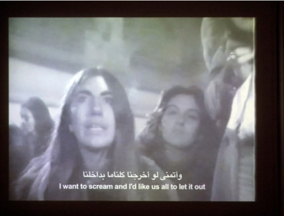

عن الارتباك والمعنى وكلاب البورجوازية
رد على رسالة محمد كلفت عن أهمية فهم تاريخ مشهد الفن المعاصر في مصر رغم نخبويته وعدم تجذيره كجزء من الممارسات الثقافية في مصر وكذلك أهمية تأريخ هذا المشهد، كجزء من مشهد فني مستقل تطور على مدار عقدين أو أكثر
نص المقالة